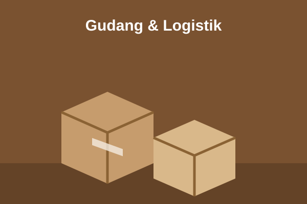

Proses Produksi
- Konsultasi & Desain: menentukan ukuran, bahan, dan membuat dieline.
- Persiapan Bahan: kertas dan karton diperiksa lalu dipotong sesuai ukuran.
- Pencetakan: cetak offset atau flexo sesuai desain merek.
- Finishing: laminasi, hot stamping, emboss, dan pelapisan.
- Pemotongan & Perekatan: die-cut lalu dilipat dan dilem.
- Pemeriksaan Mutu: uji kekuatan dan pengecekan visual.
- Pengemasan & Pengiriman: disusun di pallet dan dikirim ke pelanggan.

Fasilitas & Mesin
| Fasilitas | Jumlah | Kapasitas | Fungsi |
|---|---|---|---|
| Mesin Cetak Offset 4 Warna | 4 unit | 12.000 lembar/jam | Cetak folding carton dan rigid box |
| Mesin Flexo | 2 unit | 150 meter/menit | Cetak corrugated dan kantong |
| Mesin Die-Cut | 6 unit | 5.000 pcs/jam | Pemotongan sesuai pola |
| Mesin Laminasi & UV | 3 unit | 8.000 lembar/jam | Finishing glossy, doff, spot UV |
| Gudang Bahan & Barang Jadi | 2 gedung | 6.000 pallet | Penyimpanan dan distribusi |

Sertifikasi & Standar Mutu
- ISO 9001: Sistem Manajemen Mutu
- FSSC 22000: Keamanan kemasan pangan
- FSC: Bahan kertas dari sumber bertanggung jawab